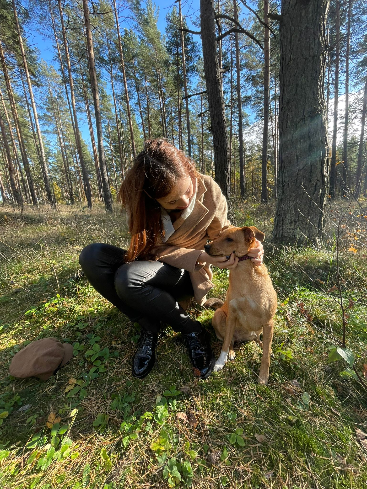

Our wonderful story... I created this page to tell you the story of my dog. Sit back and read our story of endless love. I promise that this story will not leave you indifferent. 
“... December 23, 2019. After eight o'clock in the evening, my boyfriend Arthur picked me up from work. We were going to pick a present for his mom for Christmas.
We walked through the shopping centre Alfa, chose gifts, then went to have a snack. As if nothing unusual, but everything around seemed to be saturated with the atmosphere of pre-Christmas peace and magic. No, really, we didn't even feel the fuss- only j o y and h a p p i n e s s.
We drove up to the house, Arthur suddenly expressed a desire to walk to the grocery shop, I went home. He was gone for ten minutes, twenty, half an hour, an hour .. And suddenly the call:
-Where are you?! I actually ...
-Listen! Now there will be an unusual request. In general, please, blindfold yourself with a scarf. I will come back soon.
Mentally preparing for the fact that Arthur would come with five roses and a chocolate bar, I blindfolded myself and began waiting. A minute later, the door opened and a small sweet meteor flew into the room. At that moment, our life changed 180 degrees. "
This story is not only about belief in a miracle and the fulfillment of cherished desires. This story is not only about love for animals and the desire to have a dog. This story is about sincere love and the ability to hear each other.
Science-Based Benefits of Having a Dog
- Dogs help you stop stressing out.
- Dogs make us feel less alone.
- Dogs make us more social.
- Dogs are so adorable they make us love them.
Remember!
A dog is a great responsibility for life! Think twice before adopting a dog or any other pet!- It is necessary to walk the dog several times a day. Also, the dog wakes up early enough in the morning. If you like long walks in the fresh air, this will be a perfect match.
- A dog requires a lot of attention and love. Don't get a dog if you don't have time to spend time with your pet.
- A dog, like a child, needs to be educated. You don't need to teach your dog fifteen commands, but it would be great if you could teach your dog how to interact with other pets and people. Your dog must be kind.